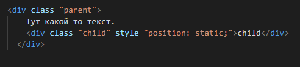
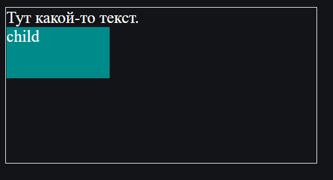
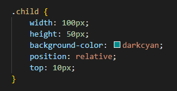
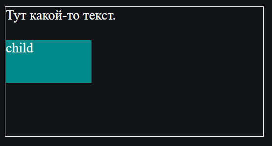
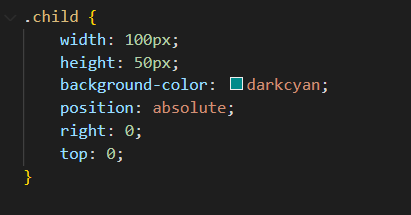
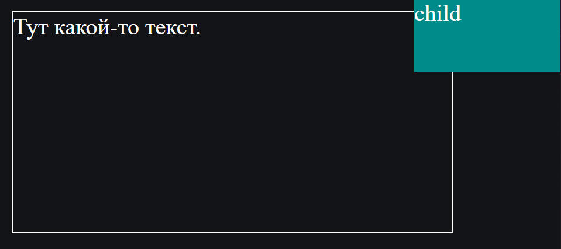

Position
CSS Position - это свойство, используемое для указания позиции элемента на веб-странице. Это позволяет разработчикам контролировать макет элементов на странице, определяя их позицию относительно других элементов или окна просмотра.
Различные значения
Есть пять различных значений position в CSS: static, relative, absolute, fixed и sticky.
static
static - это значение по умолчанию и означает, что элемент будет расположен в соответствии с обычным потоком документа.
 relative
relative позволяет позиционировать элемент относительно его нормальной позиции, с возможностью сдвига по горизонтали или вертикали с помощью свойств top, bottom, left и right.
Попробуем сдвинуть наш элемент с классом child на 20px вниз по вертикали.
 Координаты
Для сдвига можно использовать координаты:
- top – сдвиг от «обычной» верхней границы
- bottom – сдвиг от нижней границы
- left – сдвиг слева
- right – сдвиг справа
Не будут работать одновременно указанные top и bottom, left и right. Нужно использовать только одну границу из каждой пары.
Возможны отрицательные координаты и координаты, использующие другие единицы измерения. Например, left: 10% сдвинет элемент на 10% его ширины вправо, а left: -10% – влево. При этом часть элемента может оказаться за границей окна.
absolute
При absolute элемент исчезает с того места, где он должен быть и позиционируется заново. Остальные элементы, располагаются так, как будто этого элемента никогда не было.
Координаты top/bottom/left/right для нового местоположения отсчитываются от ближайшего позиционированного родителя, т.е. родителя с позиционированием, отличным от static. Если такого родителя нет – то относительно документа.
Ширина элемента с position: absolute устанавливается по содержимому. Детали алгоритма вычисления ширины описаны в стандарте.
Давайте попробуем, например, отпозиционировать заголовок в правом-верхнем углу документа:
 fixed
Позиционирует объект точно так же, как absolute, но относительно окна.
Разница лишь в том, что когда страницу прокручивают, фиксированный элемент остаётся на своём месте и не прокручивается вместе со страницей.
sticky
Блоки с «липким» позиционированием ведут себя как position: relative и position: fixed одновременно. Пока блок не достиг указанного расстояния от края окна браузера, он ведёт себя как относительно спозиционированный. Когда блок достигнет этой точки, то станет вести себя, как будто мы указали position: fixed. А когда он встретится с противоположным краем родителя, то снова будет вести себя, как position: relative.
В общем, CSS position является важным свойством, которое позволяет разработчикам контролировать макет элементов на веб-странице. Он может использоваться для различных целей, от простых настроек до более сложных макетов и может сочетаться с другими свойствами CSS для еще большего контроля.